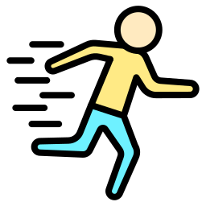
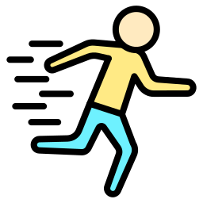

- HTML / CSS 
- Bureautique
- Java 
- Dynamique 
- Communication
- Travail Collectif
Bonjour , je m'appele Yanis Amand, je suis un étudiant développeur en BTS SIO passionné par les technologies, l'informatique et surtout les jeux vidéos. Bienvenue sur mon portfolio où vous pourrez découvrir mes projets, mes expériences et mes compétences.
Stage d’observation de 3ème. Entreprise Suez | 2 Rue des Mares Juliennes, Chily Mazarin
Lycée | Georges Brassens, Evry Première Sciences et technologies de l'industrie et du développement durable
Lycée | Parc Des Loges, Evry Baccalauréat Technologique (STMG Option : Systèmes d'Information et de Gestion)
Lycée | Parc Des Loges, Evry 1ere année de BTS SIO ( Services Informatiques aux organisations)
Stage | GSF Atlas
Stage de 1ère année de BTS SIO (6 semaines)
Stage | Sipej
Stage de 2eme année de BTS SIO (6 semaines)
- HTML / CSS
- Bureautique
- Java
- Dynamique 
- Communication
- Travail Collectif
 JEUX VIDEOS
JEUX VIDEOS
 BASKET-BALL
MON PROJET DE FORMATION
BASKET-BALL
MON PROJET DE FORMATION
Je suis en ce moment en BTS SIO (Services Informatiques aux organisations), je vais integrer ma deuxieme année au Lycée parc des loges, je ne sais pas encore exactement ce que je voudrais faire plus tard mais je me dirigerai possiblement Bachelor Développeur Web, je suis encore un peu perdu par rapport a cela j'essaye d'y refléchir, j'adore le front-end des sites web je vais essayer d'en faire un metier possible.